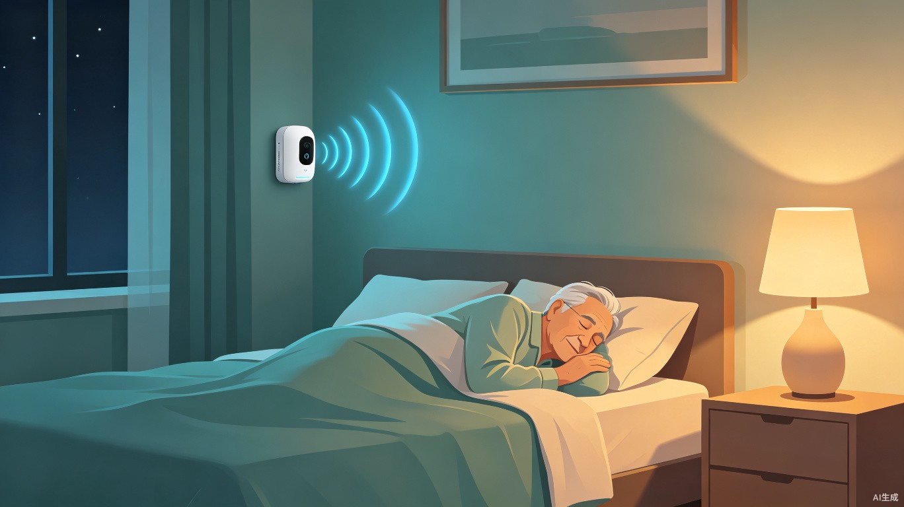
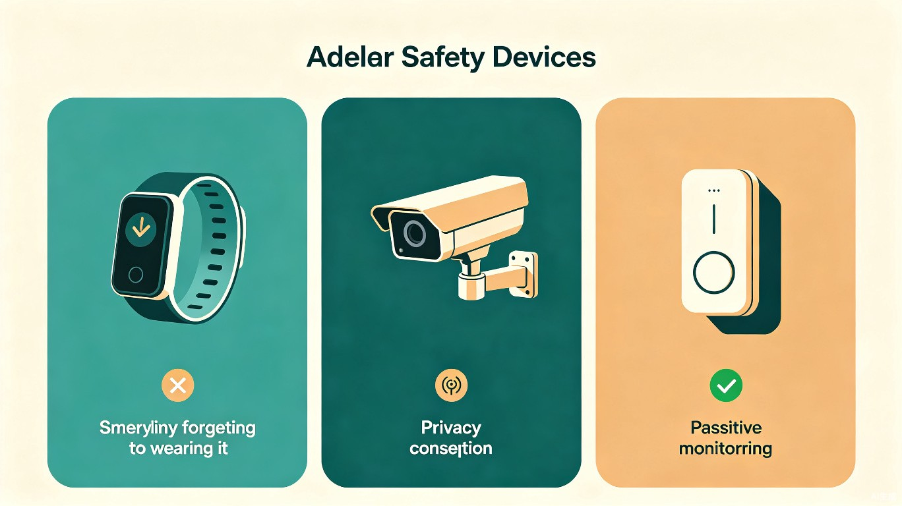
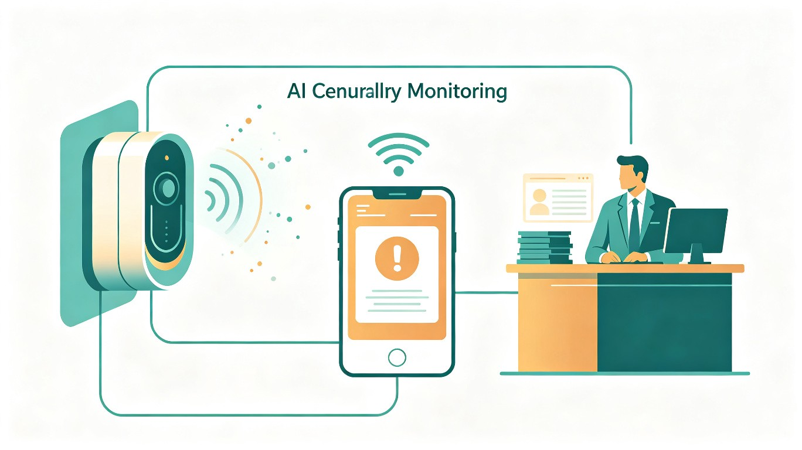

01 创意背景与灵感起源
现实痛点
老人跌倒后若超过1小时无人救助，致死率显著上升。市面上大多数"一键呼救"设备依赖老人主动触发——但意外发生时，老人往往没有能力按那个按钮。
灵感起源
我外婆去年独居在家时不慎滑倒，躺在地上两个多小时才被邻居发现。那次经历让我深刻意识到：能不能用AI把"被动呼救"变成"主动发现"？
核心思路
不需要老人做任何操作，设备自己就能判断是否出了意外——通过毫米波雷达持续感知呼吸、体动、跌倒姿态，实现真正的"无感监测"。
02 产品概述
一套非摄像头类AI安全监测系统，由毫米波雷达传感器（监测呼吸、体动、跌倒姿态）和智能网关组成，安装在卧室或卫生间，实时感知老人行为状态，一旦检测到异常（如长时间无人移动、跌倒姿态、呼吸节律异常），自动向子女手机和社区服务站发送分级告警。
典型告警场景时间线
03 目标用户与使用场景
👴 核心用户：独居老人
- 65岁以上，独居或白天独处
- 日常活动场景：夜间起夜、洗澡、做家务
- 核心诉求：不改变生活习惯，不被侵扰式监控
- 心理特征：重视隐私与尊严，抵触摄像头类产品
💻 付费用户：远程子女
- 在外地工作，无法时刻照看父母
- 日常焦虑：担心父母突发意外无人知晓
- 核心诉求：获得一份"实实在在的安心"
- 使用方式：通过手机App接收告警与日常状态
04 市场方案对比与痛点分析
当前市场上的老年安全设备各有显著缺陷，无法真正满足"无感、主动、隐私安全"的需求。

| 对比维度 | 智能手环/手表 | 摄像头监控 | 传统拉绳呼救器 | 守望者系统 |
|---|---|---|---|---|
| 是否需要老人操作 | 需佩戴+充电 | 无需操作 | 需主动拉绳 | 完全无感 |
| 隐私风险 | 低 | 极高 | 低 | 零隐私侵入 |
| 老人失去意识时 | 无法检测 | 可识别 | 完全失效 | 主动发现 |
| 卫生间可用性 | 需摘下 | 隐私禁忌 | 可用 | 最佳场景 |
| 老人接受度 | 偏低（嫌麻烦） | 极低（抵触） | 中等 | 高（无干扰） |
| 安装难度 | 简单 | 中等 | 需布线 | 简单（贴装即用） |
05 系统架构

毫米波雷达传感器
安装在卧室或卫生间墙面，发射毫米波信号，通过回波分析感知人体呼吸频率、体动幅度、姿态变化（包括跌倒检测），无需光线，完全隐私安全。
智能网关
内置边缘AI芯片，实时处理雷达数据，运行跌倒检测与异常行为识别算法。通过WiFi/4G连接云端，支持本地离线告警，断网也能工作。
手机App & 云平台
子女通过App实时查看老人日常活动状态（如"今日活动正常"），接收分级告警推送。云平台提供数据存储、AI模型更新和订阅服务管理。
社区服务站接入
三级告警触发时自动通知社区服务站值班人员，实现"设备预警 + 人工复核"的双重保障，打通居家安全与社区养老的最后一公里。
06 价值与意义
🌎 社会价值
每套设备都有可能在一个家庭最紧急的时刻成为"救命稻草"。我国老龄化进程加速，养老资源始终有限，用AI技术做"无感化、主动式"的居家安全守护，是缓解养老压力的一种低成本、可推广的补充方案。如果这套系统能普及，很多"独居老人发生意外数小时无人知晓"的悲剧可以大大减少。
💜 效率与情感价值
对子女而言，获得一份实实在在的安心，不需要时刻打电话确认父母安全；对老人而言，不改变生活习惯、不被侵扰式监控，晚年生活更有安全感和尊严。同时，比传统的养老服务人员上门巡查更及时、更高效，能在黄金救援时间内发出警报。
📈 商业落地性
硬件设备以成本价或低价销售（参考智能家居定价），主要利润来自配套的"人工守护订阅服务"（如7×24小时人工坐席复核告警、紧急联系人通知）。可进一步与社区养老服务站、物业合作，作为社区养老服务包的一部分，形成规模化部署。
07 商业模式与落地路径
商业模式四步走
硬件低成本渗透
传感器硬件以接近成本价销售，降低家庭决策门槛，快速获取用户
订阅服务变现
7×24人工坐席复核告警、紧急联系人通知、月度健康报告
社区合作规模化
与物业、社区养老服务站合作打包销售，成为社区养老标配
数据增值服务
脱敏数据赋能保险定价、健康管理，开拓B端收入来源
定价策略
硬件一次性购买 299-499元，基础监测功能免费；订阅服务 29-59元/月，包含人工坐席、健康周报、多联系人告警等增值功能。
渠道合作
与社区养老驿站、物业公司、适老化改造服务商合作，以"社区智慧养老套餐"形式推广，降低获客成本，快速规模化。
08 总结与展望
"守望者"系统以毫米波雷达 + 边缘AI为核心技术路径，精准切入了"独居老人安全监护"这一刚性需求场景。相比市面上现有的手环、摄像头、拉绳呼救器，它同时解决了三个关键问题：无需老人操作、零隐私侵入、失去意识时仍能主动发现。
随着中国老龄化进程持续加速，独居老人数量预计将在2030年突破2亿。"守望者"不仅能守护每一个家庭的紧急时刻，更有望成为社区智慧养老基础设施的重要组成部分——用技术的温度，让每一位老人都能安全、有尊严地安享晚年。